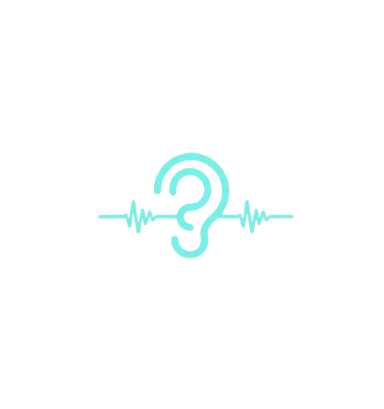
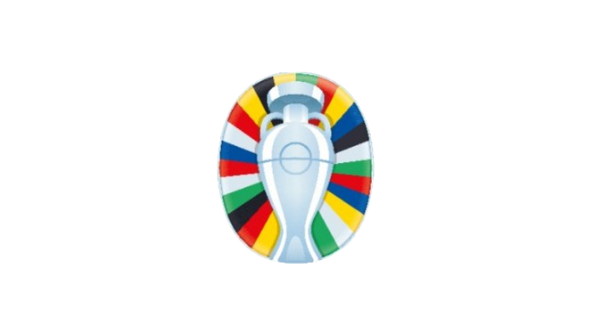

tAIlor
Firefox-based extension that takes in LaTeX formatted resumes and a job description to return a tAIlor-ed resume with language effectively aligning your impact and qualifications to any opportunity. Leverages your choice in LLM from a selection of models from OpenRouter and independent providers.
doneSimple
A desktop task management app built on the belief that organization can be simple. Designed with a distraction-free interface, doneSimple lets you capture, organize, and complete tasks without the overhead of complex productivity systems.

Impoverished Languages
A look into the NLP research space discussing the foundational papers for handling what I coin the impoverished languages: low-resource languages, unknown scripts, and constructed langauges. Offers a concise starting point for future research that is concious to the nuissances of these languages often blemished by high-resource practice bias.
Fine-tuned MCQ Qwen-Instruct
Optimized a Qwen2.5-0.5B model for machine learning reasoning via Supervised Fine-Tuning (SFT). Developed a high-signal dataset of 985 samples using synthetic and curated sources, resulting in a 1st place finish (57.6% accuracy) in a competitive cohort of 417 students.

Speech Accent Detection
Engineered a pipeline to transform raw audio into STFT Spectrograms for "accent image" classification. Using a custom 400k-parameter ResNet, I stabilized training to achieve 62% accuracy in identifying L1 language families—priming ASR systems for more inclusive recognition.

UEFA Euro's Match Predictor
Developed an end-to-end ML pipeline to forecast UEFA Euro 2024 outcomes. By programmatically scraping 60+ years of match data via BeautifulSoup, I trained a Random Forest Classifier that successfully predicted Spain as the tournament champion.